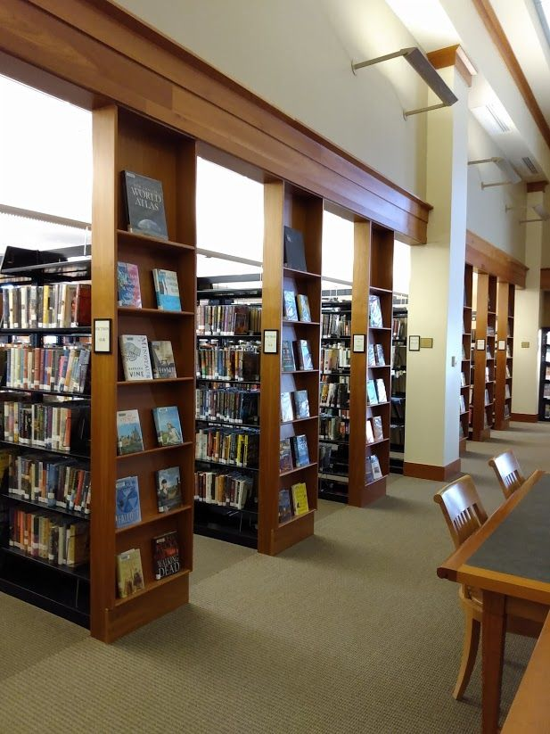
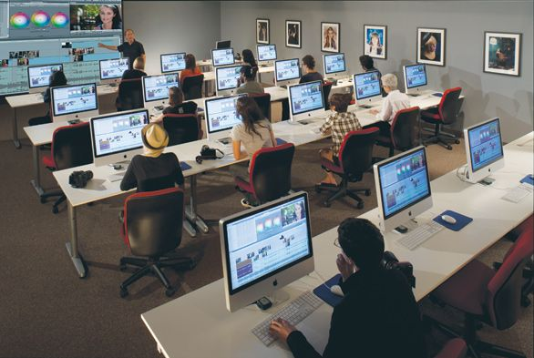
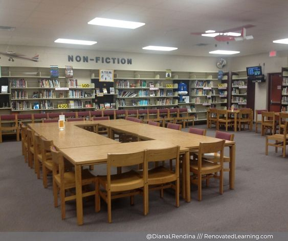

Explore our extensive collection of books, carefully curated to satisfy every literary appetite. Whether you're seeking the latest bestsellers, timeless classics, or niche subjects, our shelves are stocked with a wide variety of titles for readers of all ages.
Access our vast array of digital resources from the comfort of your home or on the go. Dive into our collection of e-books, audiobooks, and digital magazines, available for download to your preferred device. Additionally, explore our online databases and academic journals to support your research needs.
Our team of experienced librarians is dedicated to helping you navigate the sea of information available. Whether you're a student working on a research project, an academic conducting scholarly research, or a curious individual seeking answers, we're here to provide personalized assistance and guidance.
Need to access the internet or complete assignments online? Our library offers computer workstations with high-speed internet access for public use. Whether you're checking emails, conducting online research, or applying for jobs, our computers are equipped with the tools you need.
Print, copy, and scan documents with ease using our printing and copying facilities. Whether you need to print out a report, make copies of important documents, or digitize old photos, our self-service machines are available for your convenience.
Looking for a quiet space to hold meetings, study sessions, or group discussions? Reserve one of our meeting rooms equipped with modern amenities such as projectors, whiteboards, and audiovisual equipment. Whether you're collaborating on a project or hosting a presentation, our meeting rooms provide a comfortable and professional environment.
Find your perfect study spot in our dedicated study areas. Whether you prefer a quiet corner for solitary study or a collaborative space for group work, our library offers a variety of seating options to suit your needs. Plug into power outlets, connect to Wi-Fi, and focus on your studies in a conducive environment.
Encourage a love of reading and learning from an early age with our children's services. From interactive storytime sessions to educational workshops and activities, we provide engaging programming designed to spark curiosity and imagination in young minds. Explore our children's books, games, and learning resources tailored to various age groups.
Empower teenagers to explore their interests and develop new skills with our teen services. From book clubs and writing workshops to STEM programs and community service opportunities, we offer a range of activities designed to inspire and engage teenagers. Our dedicated teen space provides a welcoming environment where teens can connect, learn, and grow.
  